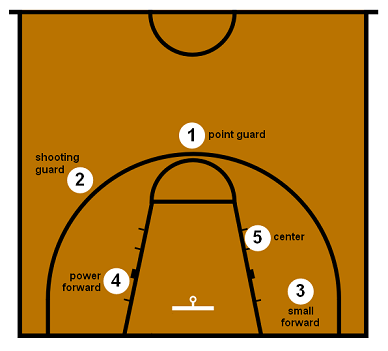

กีฬาบาสเกตบอลเป็นกีฬาประเภททีมที่มีผู้เล่นฝ่ายละ 5 คนในสนาม โดยมีวัตถุประสงค์หลักคือการทำคะแนนด้วยการโยนลูกบาสเกตบอลลงห่วงของฝ่ายตรงข้าม ทีมที่ได้คะแนนมากที่สุดเมื่อหมดเวลาการแข่งขันจะเป็นผู้ชนะ กีฬานี้เกิดขึ้นในปี ค.ศ. 1891 โดย ดร. เจมส์ เนสมิธ ที่รัฐแมสซาชูเซตส์ ประเทศสหรัฐอเมริกา เพื่อให้เป็นกิจกรรมกีฬาในร่มในช่วงฤดูหนาว เริ่มจากการใช้ตะกร้าใส่ลูกพีชเป็นห่วงและใช้ลูกฟุตบอลแทนลูกบาส ปัจจุบันบาสเกตบอลเป็นหนึ่งในกีฬาที่ได้รับความนิยมมากที่สุดในโลก โดยเฉพาะในประเทศสหรัฐอเมริกา
ผู้เล่นในทีมจะแบ่งออกเป็น 5 ตำแหน่ง ได้แก่ พอยต์การ์ด (ผู้ควบคุมเกมและนำบอลขึ้น), ชูตติ้งการ์ด (ผู้ทำคะแนนระยะไกล), สมอลฟอร์เวิร์ด (เล่นได้หลายบทบาท), พาวเวอร์ฟอร์เวิร์ด (เล่นบริเวณใต้แป้น) และเซ็นเตอร์ (ตัวสูงที่สุดในทีม เล่นบริเวณใต้ห่วงเป็นหลัก) ทีมสามารถมีผู้เล่นสำรองได้มากถึง 7 คน และสามารถเปลี่ยนตัวผู้เล่นได้ไม่จำกัดตลอดเกมเมื่อลูกตายหรือหยุดเวลา ทักษะพื้นฐานที่จำเป็นในกีฬาบาสเกตบอล ได้แก่ การเลี้ยงลูก (dribbling) ซึ่งเป็นการเด้งลูกกับพื้นด้วยมือเดียว การส่งลูก (passing) เช่น การส่งระดับอก (chest pass), การส่งกระดอนพื้น (bounce pass), และการส่งเหนือศีรษะ (overhead pass) การยิงลูก (shooting) ก็มีหลากหลาย เช่น การเลย์อัพ (layup) การกระโดดยิง (jump shot) หรือการยิงสามแต้ม (3-point shot) นอกจากนี้ยังมีทักษะในการป้องกัน เช่น การประกบตัวต่อตัว การป้องกันแบบโซน และการรีบาวด์ซึ่งเป็นการแย่งลูกที่ยิงไม่ลงห่วง
สนามบาสเกตบอลมีลักษณะเป็นพื้นแข็ง รูปสี่เหลี่ยมผืนผ้า ขนาดตามมาตรฐาน FIBA คือยาว 28 เมตร กว้าง 15 เมตร ห่วงบาสจะอยู่สูงจากพื้น 3.05 เมตร เส้นต่าง ๆ บนสนามมีความสำคัญ เช่น เส้นสามแต้มซึ่งมีระยะจากห่วงประมาณ 6.75 เมตร เส้นเขตโทษห่างจากห่วง 4.6 เมตร และเส้นแบ่งสนามตรงกลางที่ใช้สำหรับการเริ่มเล่นในแต่ละควอเตอร์ ระยะเวลาการแข่งขันแบ่งเป็น 4 ควอเตอร์ ควอเตอร์ละ 10 นาที (ตามกติกา FIBA) หรือ 12 นาที (ตาม NBA) โดยมีเวลาพักครึ่ง 15 นาทีระหว่างควอเตอร์ที่สองกับสาม ทีมจะต้องบุกภายในเวลา 24 วินาทีหลังจากได้ครองบอล และต้องข้ามครึ่งสนามภายใน 8 วินาที มิฉะนั้นจะเสียบอลให้ฝ่ายตรงข้าม กติกาเกี่ยวกับการฟาวล์นั้นครอบคลุมทั้งการปะทะรุนแรง การกระทำผิดมารยาท และการเล่นไม่เป็นธรรม หากผู้เล่นทำฟาวล์ครบ 5 ครั้งในเกม (ตาม FIBA) หรือ 6 ครั้ง (ตาม NBA) จะต้องออกจากเกมทันที นอกจากนี้ยังมีการให้โอกาสฝ่ายที่ถูกฟาวล์ยิงลูกโทษจากเส้นฟรีโธรว์ซึ่งแต่ละลูกจะได้ 1 คะแนน ในเชิงแท็กติก บาสเกตบอลเป็นกีฬาที่ต้องอาศัยการวางแผนเป็นทีม เช่น การตั้งสกรีนเพื่อช่วยเพื่อนหลุดตัวประกบ การเล่นแบบ pick and roll หรือการโจมตีแบบตัวต่อตัว ส่วนเกมรับก็มีหลากหลายรูปแบบ เช่น การประกบตัวบุคคล การป้องกันโซน และการดักคู่ต่อสู้แบบสองคน การแข่งขันบาสเกตบอลในระดับโลกมีความหลากหลาย ทั้งในระดับลีกอาชีพ เช่น NBA ในสหรัฐอเมริกา ซึ่งถือเป็นลีกที่ดีที่สุดในโลก รวมถึงการแข่งขันระหว่างประเทศ เช่น การแข่งขันชิงแชมป์โลกของ FIBA และการแข่งขันกีฬาโอลิมปิก ซึ่งจัดขึ้นทุก 4 ปี
เว็บไซต์นี้จัดทำขึ้นเพื่อการศึกษา
© จัดทำโดย นาย เอกมนัส ปิ่นแสง เลขประจำตัว 11778 ห้อง 1/1 ทธ. วิทยาลัยเทคโนโลยีวานิชบริหารธุรกิจ